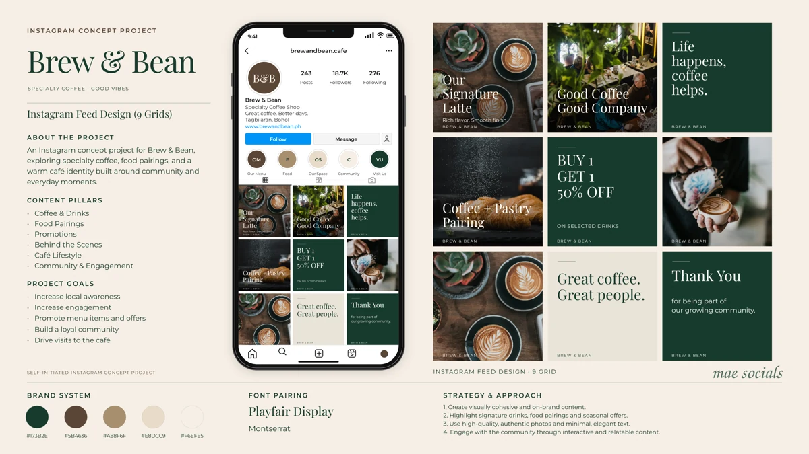

Your work, with more of the thinking behind it.
Your updated portfolio keeps Mae Socials’ warm editorial identity and original projects, with clearer labels, interactive galleries, tailored strategies for all four concept brands, sample audits, month plans, and a practical workflow.
Open the updated portfolio →Choose a brand in Strategy
Brew & Bean, Glow Theory, Style Muse, and Stronger With Sam each have their own audience, content pillars, metrics to track, audit, and proposed month plan. All 36 original concept posts have sample captions.
The featured café concept

Self-initiated concept project. The original board’s profile details, follower counts, and offers are illustrative.
Ready to publish the files?
Extract the ZIP and upload the website files and entire assets folder to your existing repository root. The homepage is index.html.
Read the publishing notes · Read the portfolio handover
Live browser verification was blocked in this environment. Source, asset, and interaction logic checks are documented in the handover.